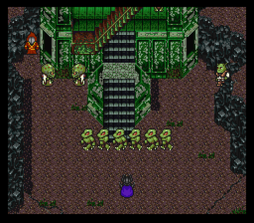
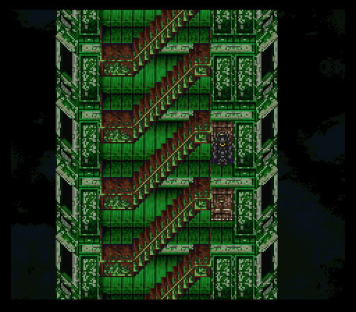
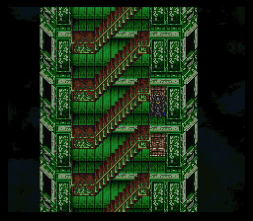
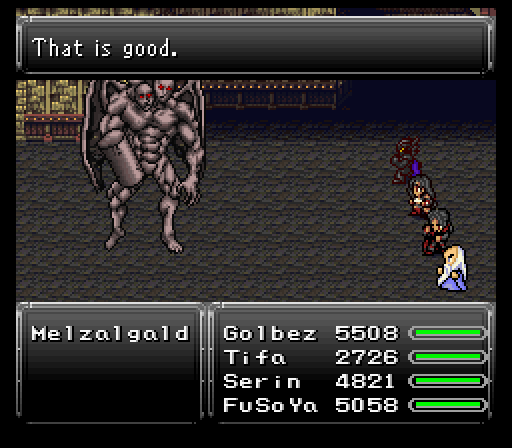
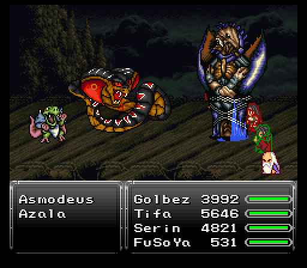
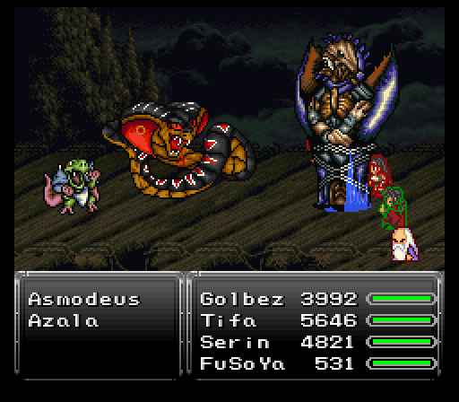
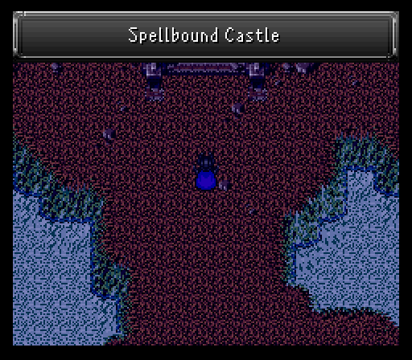
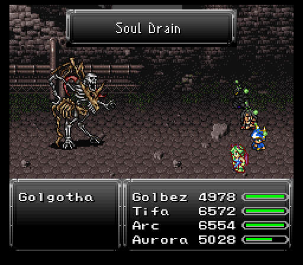
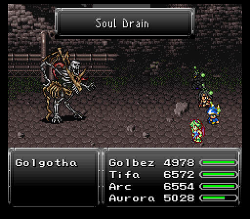
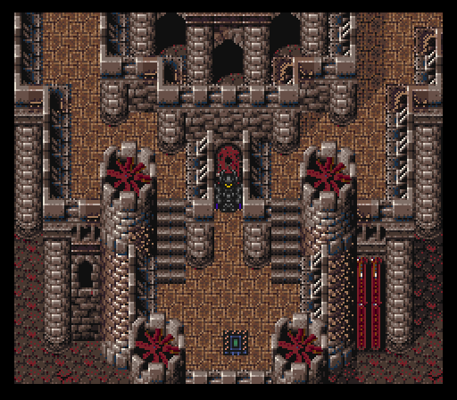

Part 30: Reptite Rumble & Eternal Dragon
Tyrano Tower:
Time to climb the Tyrano Tower. This dungeon's located southeast of Fraust if you've forgotten.
Team wise, Tifa and FuSoYa are here because there are some rewards in the tower that both can use. The rest is just a focus on magical offense since the enemies either have high physical evasion, high physical defense, or a combination of the two.
As for the enemy threat level, the higher up you go the stronger the monsters become. There's lots of magic being tossed around so make sure your magic defense is good amongst your party members. Toss fire/ice/lightning resistant gear on top of that and the only major threat, if any, is random Flare spells nailing a target for roughly 3k damage.
All the monster formations have a lot of spell points to give, so spell-learning should go faster than ever while climbing up the tower. The Vortex spell is especially useful here to quickly end the monotonous onslaught of battles, as most of them you cannot directly run or Teleport from. The Talisman relic may come in handy as well if the encounter rate becomes rage-inducing.
The monsters that call this tower their home are:
- Gremlin Nob - They enjoy bouncing back healing spells on allies with Reflect, for some reason, while doing the opposite and bouncing level 3 spells off of monsters with Reflect so that they hit the party. *shrugs* They can be killed instantly with Death or Break, or other instant death attacks and weapons.
- Dorky Face - Quite dangerous despite the name. Uses Gravity, Quake, and Holy, and like the others buffs its friends while screwing over the party, this time with Slowga.
- Firebrand - We fought one a long time ago somewhere. Counters attacks with Silence or Sleep.
- Omnigear - Has an fairly expansive script featuring lots of mech-like attacks, before shifting into a more-dangerous pattern at some point, using strong ST spells like Ninth Dimension and Flare, or its special attack Thermo Cannon. Once it begins to glow, brace yourself for a Flare Star to the face. It is quite beefy, but gives a lot of exp in return.
- Sharpflat - These guys can open up with Death and counter attacks by hasting monsters while berserking or slowing an ally.
- Shinigami - Unearthly beings that use water spells, Break and Vortex. They counter attacks by buffing a monster followed by using Expel or Confuse on an ally.
- T-Rexaur - Same ones as from the Dinosaur Forest, as dangerous as ever.
- Karakasa - Now these suckers pack a real punch, we're talking Meteor, Merton and Flare. And on their fourth turn, they have a chance to use Flare or their special attack 3 times in a row! They counter by using either Reflect or Reraise on themselves, while casting Stop or Nova on the party.
- Vlakorados - Found inside the rooms. We've fought them a bunch already elsewhere and they pose zero threat to us now.
- Warlock - A pathetically weak, low level human mage.
- Whelp - A newly hatched dragon that somehow uses level 3 spells, and counters attacks by buffing a monster followed by using Osmose or Hex on an ally.
- Xenomorph - Fought these death-dealing aliens in the Dinosaur Forest.
- Zodiark - Uses level 3 spells and counters by buffing other monsters, while putting to sleep or destroying mp from an ally. Can be killed instantly with Death or Break. They have Magic Tabs as a rare steal.
The dungeon's design is pretty dang plain though. Just one very long climb up several screens worth of stairs with some treasure rooms sprinkled along the way, a couple of which don't have much more than a tab or a high end buyable shield. Inside the first room, to the right of the chest there is a hidden switch, that open a door to another room on the floor below, with a chest containing a Conformer.
 

Besides the mediocre treasures, there's two optional bosses that you'd do very well to take out as you climb up.
First one up to bat is an upgraded version of Colossus, Melzalgald. Focuses on multiple single target attacks with Obliterate being a very powerful physical strike. That's basically all the boss does though, besides the occasional Dancing Flame or Lifeshaver, so if everyone gets Protect cast on them and there's one or two people attacking at a time to minimize counters messing things up, you should have little to no issue destroying the boss. That being said, Lifeshaver and Dancing Flame hurt for more than we're used to because Melzalgald has a remarkably high magic stat.
Melzalgald has quite a bit of hp to run through, and on the way out he does six regular attacks in a row, so consider summoning Fenrir or Vysage at some point into the battle. Notice I didn't recommend using Search Ghost... that's because if any character has Clear status Melzalgald will use Magnitude Eight. However, coming into the battle pre-vanished is indeed helpful because Melzalgald doesn't check for it until some time passes, and if your party is also floated, that will negate the damage.
While there's a Might Tab up for stealing, the real prize is the drop, Tifa's ultimate weapon which is called Godhand. Good stats all around and uses mp for automatic criticals with a random chance to cast Confuse. The spell proc isn't the most useful in many cases, but mp fueled criticals are always good.

Second boss is the 6th optional dragon, the holy aligned Alduin. Attacks multiple times like Melzalgald, but has more options than physicals for dealing high damage. There's Flare which can nail a target for close to 5k damage, Holy, Aero, Giga Volt, and so on. More troubling is Alduin's access to Heartless Angel. Not quite as adept at chaining it into some kind of AoE attack like Griever, but it's still very threatening regardless.

After a surprisingly awesome ending to a battle where Alduin chose a death by Tifa's Reels summoning Bahamut, which is quite ironic as you'll see in a bit, the dragon drops a Holy Lance.
Finally, there's the top of the tower with a most appreciated added save point. You'll also notice a large, cobra-like snake looming overhead like death itself, watching your every move... Make sure as many people as possible have immunity to confusion and good elemental resistances (fire or wind especially!) across the board before you enter the door. Inside is a new relic, the Zohar Shard. This turns the Magic command into X-Magic, allowing the wearer to cast two spells back to back.

The problem? Azala of the Chrono Trigger universe wants the relic back and she's brought a pet snake, Asmodeus, to help her out.
 

Asmodeus is the more offensive of the two, sporting tier 3 spells, Plague, and good physical damage. It can also cast Vertigo which attempts to confuse the entire party.
As for the queen of the Reptite race herself, Azala takes a slightly less offensive role with moves like Flare Star and support via Curaga, Reflect, and Hastega. She does have Gravity though so you may want to take her out first or bring along Arc to spam Runic.
Azala has two moves that are worth noting besides the above. One is the only reason I brought FuSoYa along as she's the source of a new Arcane spell called Force Field. This picks a random element and nullifies all sources of damage that deal it for enemy and ally alike.
Azala's other move is about as close as she's gonna get to Lavos causing an earth shattering kaboom in her time, Meltdown. She only uses this when she runs out of health, but the damage is severe at 6k or so before resistances.
While the steals aren't much to write home about (Atomic Ball from Asmodeus, Chrono Helm from Azala), the drops are. The Magus Rod is nice if you haven't dabbled too much in the arena, but the real reward is another new relic, the Divine Gift. Basically the physical equivalent of the Zohar Shard, changing a character's Fight command to X-Fight, allowing for 2-4 consecutive attacks. You'll also acquire the esper Bahamut. Appropriate for the king of dragons, Bahamut teaches the Flare spell and Golbez can equip the esper along with some others.

Make sure to immediately revive any KO'd characters and heal up before taking a step, as random encounters are still very much a thing. Now, while I would say it's about time to tackle Zuriel's Tower, there happens to be one final optional dungeon to blast through. One that Arc may very well be saving my life in. Now walk down the stairs to the previous floor and then Teleport away to save a bunch of time walking all the way back down, unless you are a true masochist.
Spellbound Castle:
The team's back in the new esper world via Lunaris's Dimensional Gateway. Behind where Golbez once was is one of the final optional dungeons to explore, the Spellbound Castle.
Spellbound Castle's design is exactly like Mist Castle, just without any venturing indoors. All the doors and teleports take you to various spots outside, but luckily the path is linear as all hell so there's no getting lost.
The few monsters infesting this castle are:
- Auroch - Last seen inside Saarlac, they're beefy boys with a very strong special attack.
- Beezlebub - Strong spellcaster, also with a strong special attack. When hit by magic, it can counter by casting Reflect on a party member, then use Anti-Reflect on them after. Weak to earth.
- Iron Titan - The rare encounter of the lot. Uses Blaster a lot and has the most hp and battle power of the monsters here. They have Soma Drops as a rare steal and are weak to wind and water.
- Tiamat - Dragon-type monsters that are weak to holy. They can use some dangerous spells, such as Gravity, Vortex and Soul Fire, but they don't have that much hp. They can drop Stamina Tabs.
As we make our way along the castles parapet, there is an issue of a rogue skeleton that attacks you by the storage room in the southeast. Not your bog standard would die in one hit type of skeleton, but a...ahem..."boss" skeleton, Golgotha, accompanied by the sweet, sweet sounds of Suikoden 2's Gothic Neclord theme.
 

Golgotha certainly appears to be undead, but doesn't actually have the undead flag set, so no easy kill here. Still weak to Holy element though, so he gets absolutely wrecked by Tifa and her Godhand glove. Golgotha also hits respectively hard, has a powerful Hyper Drive attack and his special attack, Zombie Twister, to inflict exactly the ailment you're thinking of on a target among other moves. He can also use Soul Drain after taking enough punishment, and when combined with being poisoned causes your hp to fall faster than a drunk on a mountainbike. So yeah, a lot of poisoning, zombifying and death going on with this battle, but that's about it. It's a highly manageable fight and we're much too strong at this point.
Golgotha has a valuable Necronomicon to steal, but my Arc and Aurora failed to get it in time before I had to end the fight cause Soulfire shenanigans. He did drop a new helmet though, the Undead Crown. Not as good as a Dragon Helm defensively, but it does raise the success rate of Golbez's Torment skill.
Inside the storage room is actually the treasure room from Durandal Castle's basement. The suit of armor has a Gamma Sword on it though. Holy elemental and randomly casts Expel.

Also in the room is a ghost who mentions the eight optional dragons having a fatal weakness to mp draining. If any of them hit 0 mp, they die instantly. A little late for that, but good to know nonetheless!
Moving onwards, there's a save point where I switch some gear around. Arc and Aurora get White Cape relics, everyone nulls/absorbs fire or wind, and then the team heads to the higher levels of the castle to find the real boss of this area coming in for a visit.

This boss is none other than Dragonball Z's wish giving dragon Shenron. He's Griever 2.0 basically, just without the need to break an all damage immunity barrier first. You do have to force him to glow yellow for hp damage to start counting up though.
Two different Shenrons: Insane difficulty, which is the difficulty I'm playing on, has a different script for Shenron than the other three difficulties. While the other version has simliar attacks and patterns, the Insane version is basically more dynamic and prolonged. So if you notice things here not matching up to what you're experiencing, that's why.
While Shenron's attacks are the same as Griever's, one move in particular stands out and that's his physical skill Giga Nova. Tifa with 234 defense in the front row takes roughly 2k damage from it. That alone should tell you how horrifyingly strong this attack is. If you brought along Oboro, his Ninja Scrolls are practically a requirement for anyone around 160-180 defense to survive the attack.
The fight drags on for a hell of a long time on my end and had some oh crap moments that Quicksilvers let me reverse (Heartless Angel followed up by ANYTHING anyone?), and to top it all off uses an Ultima at the very end before crapping out... so make sure at least one of your characters has reraise applied to them! In my case, Arc wound up saving the day in glorious fashion with Runic absorbing the final Ultima, which happened to come right after Shenron used Heartless Angel... Seriously folks, you couldn't write it any better.

Shenron drops an incredible relic, the Celestriad. Reduces all mp costs by a pretty insane 75%. You can also steal a Goddess Ring from him, which can only be used by the girls and Arc, but it grants holy absorption and teaches the Holy spell.
Killing Shenron removes all random battles from the area, but there's a big crystal that he was guarding behind him. Welcome to oh crap round #infinity because out of the crystal pops Necron from FF9 who attacks the party.
Necron can counter any magic with his special attack, Grand Cross, which hits like a mack truck. They buff themself early on and has a couple annoying moves such as Vertigo (full party confusion) along with other status ailment attacks, and a few powerful spells like Flare and Meteor, or Vortex and Shadow Flare if any character has Reflect status, but should fall rather quickly compared to Shenron, who we literally just fought. Tell that to me when I was panicking and actually burned a Quicksilver the moment I saw things going south. Not much else to say about this wannabe epic boss, other than they are weak to wind and holy.
Once Necron goes poof, you get a whopping 100 Spell Points and an Aeon Crystal relic. Confers immunity to almost every ailment in the game. And with the Dark Crystal destroyed, the shroud of darkness that plagued the new esper world subsides and the monsters all retreat from the castle.
Finally, it's time we pay a certain dark sorcerer a little visit.